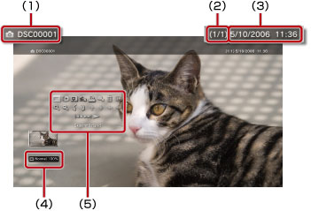

Foto > Brug af kontrolpanelet
Brug af kontrolpanelet
Udfør forskellige handlinger vha. kontrolpanelet på skærmen. Tryk på  -tasten for at få kontrolpanelet vist eller skjult.
-tasten for at få kontrolpanelet vist eller skjult.
Skærmtilstand

Skift billedets viste størrelse på skærmen.
| Normal | Vælg dette for at få vist billedet, så det passer til skærmstørrelsen, uden at proportionerne ændres. |
|---|---|
| Zoom | Vælg dette for at få vist billedet, så det passer til hele skærmstørrelsen, uden at proportionerne ændres. Dele af billedet foroven og forneden eller til venstre og højre beskæres væk. |
Tip
Det vil afhængigt af billedfilen muligvis ikke være muligt at ændre skærmtilstand.
Skift Effekt
Skift metode til overgange imellem billeder.
| Normal | Vælg dette for at erstatte det i øjeblikket viste billede med det næste billede. |
|---|---|
| Lysbillede | Vælg for at erstatte det i øjeblikket viste billede med det næste billede i et slideshow-format. |
| Fade | Vælg denne indstilling for at fade til det næste billede. |
Trimmer
Gør det muligt at slette uønskede dele af et billede (top, bund, højre eller venstre side). Vælg det område, som du vil beholde, med den højre og venstre pind på den trådløse controller. Brug den venstre pind til at rulle i en vilkårlig retning, og brug den højre pind til at zoome ind eller ud. Beskårne billeder gemmes under et andet filnavn.
Tip
Du kan kun beskære billeder, der er gemt på PS3™ systemets harddisk.
Tilføj til spilleliste
Gør det muligt at føje et billede til en spilleliste.
Tip
En spilleliste kan kun tilføjes billeder, der er gemt på harddisken.
Udskriv
Gør det muligt at udskrive et billede med en printer.
Tip
Før du udskriver, skal du konfigurere printeren i [Printervalg] under  (Indstillinger) >
(Indstillinger) >  (Printerindstillinger).
(Printerindstillinger).
Sæt som baggrund
Gør det muligt at bruge det viste skærmbillede som baggrund. Billedet bruges nøjagtigt som det vises på skærmen, inkl. forstørrelse, formindskelse eller rotation.
Tips
- Når der ikke bruges baggrund, skal indstillingen justeres under (Indstillinger) >
 (Temaindstillinger) > [Baggrund].
(Temaindstillinger) > [Baggrund]. - Der kan kun bruges et billede som baggrund ad gangen. Hvis du vælger et andet billede, overskrives det aktuelle billede.
Slet
Gør det muligt at slette billeder.
Tip
Du kan kun slette billeder, der er gemt på harddisken.
Vis
Vis oplysninger om et billede. Hver gang du trykker på  -tasten skiftes imellem skærmbilledet med Exif-informationer, skærmbilledet med informationsbjælken og skærmbilledet uden yderligere oplysninger.
-tasten skiftes imellem skærmbilledet med Exif-informationer, skærmbilledet med informationsbjælken og skærmbilledet uden yderligere oplysninger.
Et skærmbillede med en informationsbjælke

(1) |
Billednavn |
|---|---|
(2) |
Billednummer/samlet antal billeder |
(3) |
Dato og klokkeslæt for optagelsen |
(4) |
Statusikon |
(5) |
Kontrolpanel |
Zoom ind/Zoom ud

Gør det muligt at zoome ind eller ud for at forstørre eller formindske et billede. Brug den venstre pind på den trådløse controller til at rulle i en vilkårlig retning, og brug den højre pind til at zoome ind eller ud.
Roter til venstre/Roter til højre
Roter billedet 90 grader til venstre eller til højre.
Op/Ned/Venstre/Højre
Flyt billedet for at få vist eventuelle skjulte dele, f.eks. når (Skærmtilstand) er indstillet til [Zoom].
Tidligere/Næste
Få vist det foregående eller det næste billede.
Slideshow
Få automatisk vist billederne i rækkefølge.